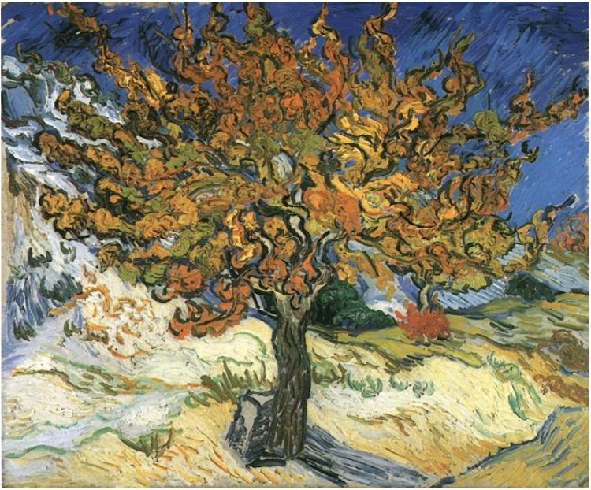
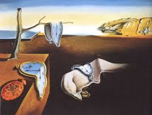

Starry Night Vincent van Gogh painted Starry Night in 1889 during his stay at the asylum of Saint-Paul-de-Mausole near Saint-Rémy-de-Provence. Read more
Van Gogh Self Portrait Dutch Post-Impressionist artist Vincent van Gogh painted a self-portrait in oil on canvas in September 1889. Read more
Night Café Night Café by Van Gogh was painted in September 1888 while he was living in Arles. Earlier in the year he had moved to a room at the Café de la Gare, where the room depicted in this painting was. Read more
 The Mulberry Tree Van Gogh painted The Mulberry Tree in October of 1889 less than a year before he would die. Read more
The Bedroom In the winter of 1888, Van Gogh traveled to a town in the south of France called Arles.This is the painting of his bedroom in a hotel. Read more
 The Persistence of Memory The Persistence of Memory is a 1931 painting by artist Salvador Dalí and one of the most recognizable works of Surrealism. Read more